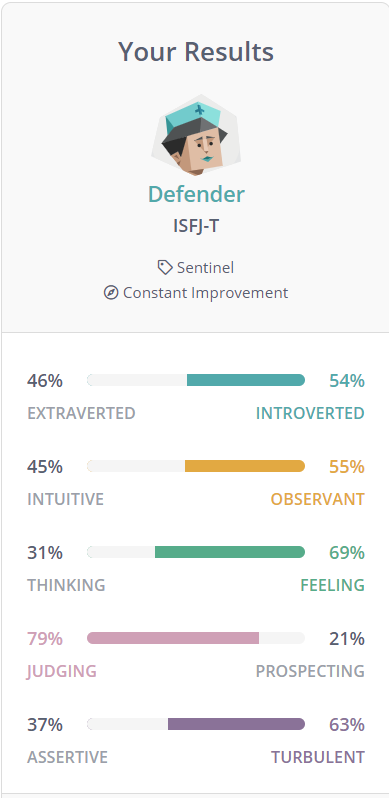
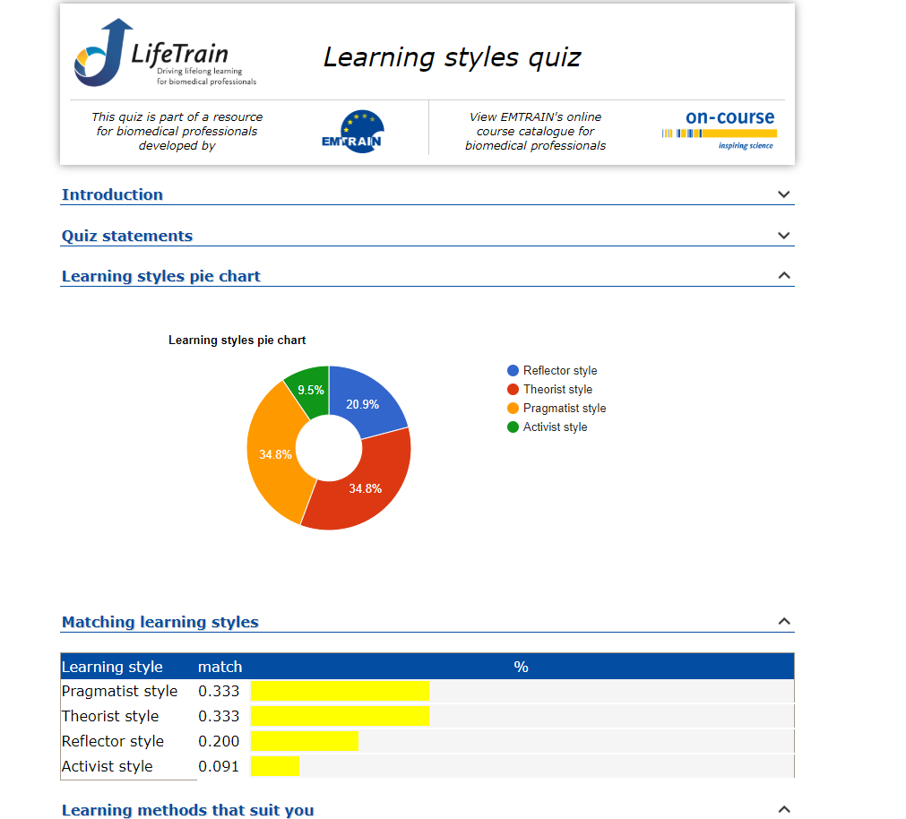
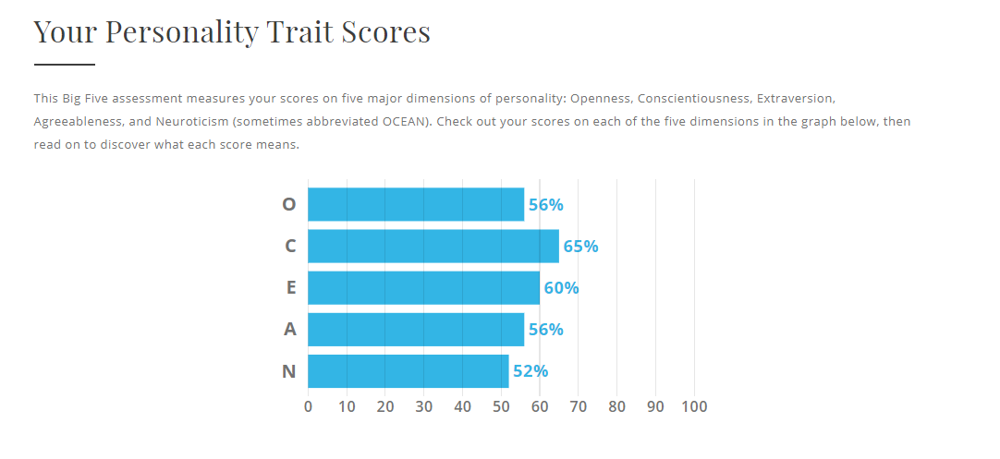

Ideal Job
The results of an online Myers-Briggs test：
The results of an online learning style test.：
The results of The Big Five Personality Test：

There result shows that I am a clear defender, visual learner and nomal personality trait, which means my traits are average.
This can help me evaluate my team performance:
- I enjoy sharing my knowledge and experience within a team and I like to deliver to a high standard.
- When I decide to do something in a team, I don't give up easily, even if my co-workers are already feeling tired.
- I do like to learn visually, and when I'm working with a team, I am more likely to see the project process rather than hear someone explains.
- Based on the results, I would be more rigid. It's true, I'm more likely to stick to the "right" way in a team than to use a flexible approach.
- My Trait, such as openness, conscientiousness, extraversion, agreeableness and neuroticism are nomally.
It makes it hard for me to do things that require specific abilities, like someone with an excellent imagination, and they can go into design.
- According to the test above, I'm an Otherist, which means I'm not good at releasing stress. Having people on the team
who are good at activating people ensures that I can release stress. - I need to make sure we have experts on the team, which will allow us to complete our work in our area of expertise faster.
- The team also needs flexible thinkers, which ensures that our team is not rigid in its thinking and is more receptive to new technologies and ideas.
- Finally, the team also needs to have people with different styles of learning, as different learning styles allow the team to better receive information from different sources. This to keep the team innovative.